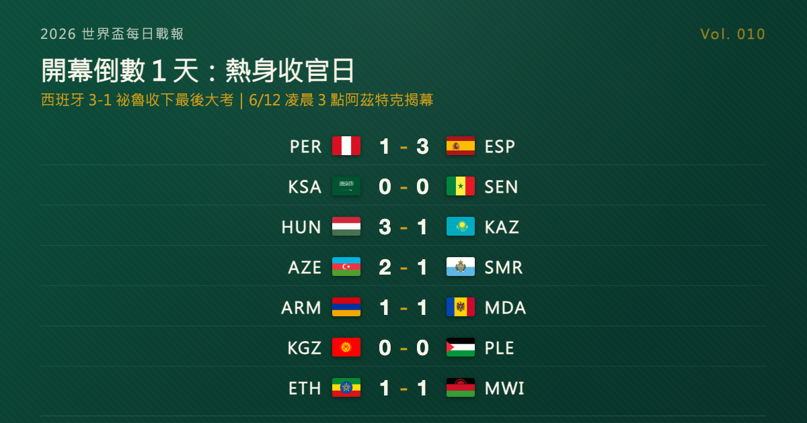

開幕倒數 1 天：熱身收官日，西班牙 3-1 帶走最後一場大賽前測
世界盃開賽前的最後一個熱身夜：西班牙在墨西哥普埃布拉 3-1 擊敗祕魯，開賽 2 分鐘就由 Oyarzabal 進球定調；匈牙利下半場連進 3 球逆轉哈薩克；沙烏地與塞內加爾在聖安東尼奧互交白卷收官。台北時間 6 月 12 日凌晨 3 點，墨西哥對南非的揭幕戰將在阿茲特克開踢——倒數歸零，真戲開鑼。

2026 世界盃每日戰報 Vol. 010
§1 即時比分戰報
6/9 本戰報追蹤到 7 場國際友誼賽，是開幕前最後一批熱身賽事之一。最有看頭的當然是西班牙：移師墨西哥普埃布拉迎戰祕魯，開賽 2 分鐘就進球、半場前再下一城，3-1 帶走一場節奏完全掌握在自己手裡的收官戰。以下為這 7 場：
| 賽事 | 比分 | 場館 | 焦點 |
|---|---|---|---|
| 🇵🇪 祕魯 — 🇪🇸 西班牙 | 1 - 3 | 普埃布拉 Estadio Cuauhtémoc | Oyarzabal 2'、Pedri 32'；53' 祕魯自擺烏龍；Vélez 66' 追回一城 |
| 🇸🇦 沙烏地阿拉伯 — 🇸🇳 塞內加爾 | 0 - 0 | 聖安東尼奧 Toyota Field | 兩隊賽前最後一測；塞內加爾終場前紅牌、10 人作收 |
| 🇭🇺 匈牙利 — 🇰🇿 哈薩克 | 3 - 1 | 德布勒森 Nagyerdei Stadion | Maliy 9' 先開紀錄（哈）；Szoboszlai 52'、Schäfer 67'、Tóth 92' 下半場逆轉 |
| 🇦🇿 亞塞拜然 — 🇸🇲 聖馬利諾 | 2 - 1 | 松博特海伊 Haladás Stadion | Nanni 9'（聖）；Dashdamirov 27'、Dadaşov 49' 完成逆轉 |
| 🇦🇲 亞美尼亞 — 🇲🇩 摩爾多瓦 | 1 - 1 | 葉里溫 Vazgen Sargsyan 球場 | Serobyan 89' 破門；Bogaciuc 補時扳平 |
| 🇰🇬 吉爾吉斯 — 🇵🇸 巴勒斯坦 | 0 - 0 | 比斯凱克 Dolen Omurzakov 球場 | 互交白卷 |
| 🇪🇹 衣索比亞 — 🇲🇼 馬拉威 | 1 - 1 | 德雷達瓦 Dire Dawa Stadium | Adepoju 18'（馬）；Belay 41' 扳平 |
7 場全屬熱身性質，單場爆點不多——這天真正的意義是「賽前」兩個字正式走入歷史。等台北時間 6/12 凌晨開幕哨響，比分就開始算真的，而這 10 天倒數期累積的所有線索，都在 §4 做一次總整理。
§2 排行榜區：開幕 48 小時——三個地主接力登場
倒數歸零後的頭兩天，三個地主依序開幕，48 隊的旅程從阿茲特克開始（台北時間）：
| 開幕場次 | 開球（台北時間） | 對戰 | 場館 |
|---|---|---|---|
| 揭幕戰 | 6/12 03:00 | 🇲🇽 墨西哥 — 🇿🇦 南非 | Mexico City Stadium（Estadio Azteca） |
| A 組同日 | 6/12 10:00 | 🇰🇷 南韓 — 🇨🇿 捷克 | Estadio Guadalajara（Estadio Akron） |
| 加拿大開幕 | 6/13 03:00 | 🇨🇦 加拿大 — 🇧🇦 波士尼亞 | Toronto Stadium（BMO Field） |
| 美國開幕 | 6/13 09:00 | 🇺🇸 美國 — 🇵🇾 巴拉圭 | Los Angeles Stadium（SoFi Stadium） |
§3 賽事摘要
- 祕魯 1-3 西班牙：開賽僅 2 分鐘，Oyarzabal 就先拔頭籌，第 32 分鐘 Pedri 再進一球；下半場第 53 分鐘祕魯自擺烏龍讓比分來到 0-3，Vélez 第 66 分鐘替祕魯追回顏面。西班牙把這場收官戰安排在墨西哥普埃布拉，等於提前進入北美時區與場地節奏——從比賽內容看，這支歐洲勁旅的開賽準備已經就緒。
- 沙烏地 0-0 塞內加爾：兩支都已晉級世界盃的隊伍在聖安東尼奧互相試探，整場沒有進球，塞內加爾還在終場前吃下紅牌、以 10 人收尾。對沙烏地而言，能在美國本土完成最後一場賽前測試，適應價值不輸比分。
- 匈牙利 3-1 哈薩克：第 9 分鐘 Maliy 先替哈薩克開紀錄，匈牙利直到下半場才發動：Szoboszlai 第 52 分鐘扳平、Schäfer 第 67 分鐘超前、Tóth 第 92 分鐘鎖定勝局，在德布勒森完成一場標準的下半場逆轉。
- 其餘 4 場：亞塞拜然在匈牙利松博特海伊以 2-1 逆轉聖馬利諾；亞美尼亞第 89 分鐘破門卻被摩爾多瓦在補時扳平、1-1 收場；吉爾吉斯與巴勒斯坦在比斯凱克互交白卷；衣索比亞在德雷達瓦由 Belay 上半場扳平馬拉威 Adepoju 的進球，1-1 言和。
§4 焦點觀察｜開賽前最後一日：10 天倒數期的所有線索，一次收齊
倒數來到最後一天。台北時間 6 月 12 日凌晨 3 點，墨西哥與南非將在阿茲特克球場踢出 2026 世界盃的第一腳——世界盃將從「即將到來」變成「正在發生」。在哨音響起之前，我們把這 10 天倒數期攢下的線索做一次總盤點——開賽之後，它們就是你看球的座標。
第一條線索：熱身賽留下的狀態訊號。 過去 10 天，幾支熱門球隊陸續交出賽前最後答卷。巴西在 6 月初以 6-2 大勝巴拿馬，攻擊火力展示得毫不保留；法國上週末 3-1 北愛爾蘭，Olise 一人包辦 3 球、用帽子戲法替 Deschamps 的主場告別作收尾；西班牙則在 6/9 以 3-1 收服祕魯，開賽 2 分鐘進球、上半場就奠定勝局，整場節奏掌控展現出大賽前該有的成熟。相對地，荷蘭雖然 2-1 贏下烏茲別克，但 Til 第 87 分鐘直紅、終場前少一人作戰，被補時扳平、靠點球驚險過關的過程，暴露的問題比答案多。熱身賽比分當然不能盡信，但「誰已就緒、誰還在找狀態」的輪廓，已經浮出來了。
第二條線索：三個地主，三種心情。 2026 是史上第一屆三地主世界盃，美國、加拿大、墨西哥各有各的課題。墨西哥承擔揭幕重任，還背著一段全國都想翻頁的歷史——曾連續 7 屆（1994-2018）止步 16 強，上一屆更在小組賽就提前出局；在主場、在阿茲特克山呼海嘯的看台前，這一屆是改寫劇本最好的機會，也是壓力最大的一次——畢竟這座球場見證過 1970 年的 Pelé 與 1986 年的 Maradona 兩度捧盃，墨西哥人太清楚它對世界盃意味著什麼。加拿大與美國則在 6/12（台北 6/13）接力開幕：加拿大要證明重返世界盃舞台不是曇花一現，美國作為最大地主，承載的是讓足球真正在這片土地紮根的期待。三地主的成績，會直接定義這屆世界盃的故事基調。
第三條線索：亞洲軍團的歷史性一屆。 這屆世界盃，亞洲足聯有 9 支球隊參賽，創下歷史紀錄：日本、伊朗、南韓、澳洲、烏茲別克、卡達、伊拉克、沙烏地阿拉伯、約旦。其中烏茲別克與約旦都是隊史首次站上世界盃舞台。沙烏地剛在 6/9 於聖安東尼奧與塞內加爾互交白卷、完成收官；南韓更是開幕日就登場——6/12 台北時間上午 10 點對捷克，是亞洲球隊本屆的第一戰，也是台灣球迷時段最友善的開幕日賽事。9 隊能走多遠，是這一屆亞洲足球最值得追的故事線。
第四條線索：那些懸而未決的問號。 倒數期我們談過的幾個懸念，將從開幕起逐一揭曉：梅西的第 6 次、也幾乎確定是最後一次世界盃，阿根廷的衛冕之路會以什麼方式收場？2022 年闖進 4 強的摩洛哥，這次還能再給世界一次驚奇嗎？48 隊的新賽制下，又會是哪幾匹黑馬踩著放大的晉級機會竄出來？這些問題現在誰都沒有答案——而這正是接下來 39 天最迷人的地方。
第五條線索：規則也換了一輪。 這是 48 隊時代的第一屆世界盃：12 個小組、每組 4 隊，小組前兩名加上 8 個成績最好的第三名、共 32 隊晉級——也就是說，淘汰賽前多了一輪全新的「32 強賽」，想捧盃得比過去多贏一場。104 場比賽分布在 16 座主辦城市（美國 11 座、墨西哥 3 座、加拿大 2 座），賽事橫跨 39 天。對看球的人來說，最直接的影響有兩個：小組第三不再注定回家，「算分」的懸念會一路拖到小組賽最後一輪；而場次幾乎翻倍，接下來一個多月，天天都有球可看。至於這套新賽制會稀釋小組賽的強度、還是反而放大冷門的空間，第一週就會給出初步答案。
最後，把行事曆寫好。 史上規模最大的一屆世界盃，從 6/11 一路打到 7/19。對台灣球迷來說，第一個鬧鐘訂在 6 月 12 日凌晨 3 點——阿茲特克的揭幕戰；不想熬夜的，同日上午 10 點南韓對捷克接力登場。從下一期起，本戰報將切換到賽事模式：比分是真的、積分是真的、淘汰也是真的。倒數結束，我們球場見。
資料來源：ESPN / FOX Sports / Sofascore / VAVEL / FIFA / Washington Post / 各國足協官網等多源交叉驗證（2026-06-09 賽果、2026 世界盃開幕賽程）。賽程時間為台北時間換算，實際以官方公告為準。
§5 明天看點
熱身賽其實還有最後的尾聲：阿根廷對冰島、伊拉克對委內瑞拉都在美國時間 6/9 晚間（UTC 6/10）開踢，賽果明天戰報見——那也將是梅西世界盃前的最後一場熱身。然後，就是正式開幕：台北時間 6/12 凌晨 3 點，墨西哥對南非，阿茲特克球場。從明天起，每日戰報切換成賽事模式，一路陪你到 7/19 決賽。
每日戰報追：https://medium.com/@foootball 賽程訂閱站：https://foootball.twtools.cc/
常見問題
2026 世界盃揭幕戰是台北時間幾點？哪兩隊踢？
台北時間 6/12 凌晨 3:00，由地主墨西哥對南非，在墨西哥市阿茲特克球場（Estadio Azteca）開踢。同日上午 10:00，南韓對捷克接力登場。
開幕日哪場對台灣球迷時段最友善？
6/12 上午 10:00 的南韓 vs 捷克——不必熬夜，且是本屆亞洲球隊的第一戰（A 組同日賽事）。
6/9 收官熱身賽，西班牙踢出什麼結果？
西班牙在墨西哥普埃布拉 3-1 擊敗祕魯：開賽 2 分鐘 Oyarzabal 先進球、第 32 分鐘 Pedri 再下一城，提前適應北美時區與場地節奏。
Tags：世界盃, 2026 世界盃, 開幕倒數, 熱身賽, 西班牙, 亞洲球隊